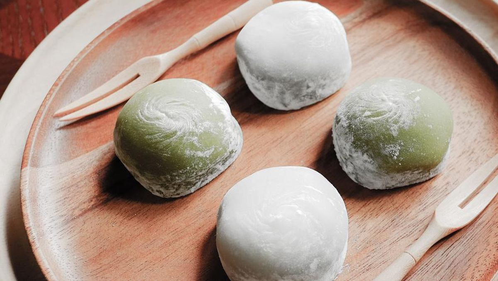
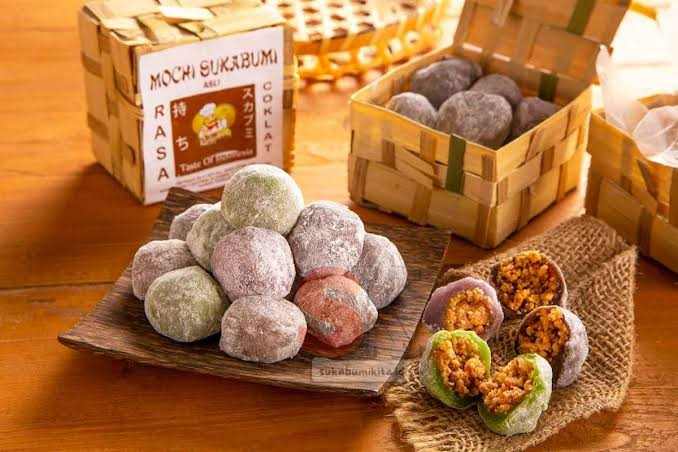

ANALISIS PRODUK KERAJINAN
Produk dari Kota/Kabupaten di Jawa Barat
Kelas: XII-2 PKWU
Nama: Aldi & Agus


Nama Kota/Kabupaten
Sukabumi
Nama Produk Kerajinan
Mochi
Bahan Utama
Tepung ketan, gula, kacang tanah, dan Beras Kentan.
Apakah Cocok Dijual di Tempat Lain?
Ya, karena mochi memiliki rasa manis dan tekstur unik yang disukai banyak orang, sehingga bisa diterima di berbagai daerah.
Cara Memodifikasi untuk Pasar Anak Muda
Menambahkan varian rasa seperti matcha, cokelat, stroberi, atau oreo, serta kemasan yang Bisa Kita Request Sendiri Seperti Tampilan kemasanya Foto Sendiri,Foto Idol,Anime,kpop,Dan Aib.
Fungsi
Sebagai camilan atau oleh-oleh khas Sukabumi.
Ciri Khas / Keunikan
Memiliki tekstur lembut, lengket, dan isi kacang manis di dalamnya.
Estetika / Tampilan
Berbentuk bulat mungil dengan taburan tepung putih di Atasnya.
Harga Jual Rata-rata
Rp 15.000 - Rp 30.000 per kotak.